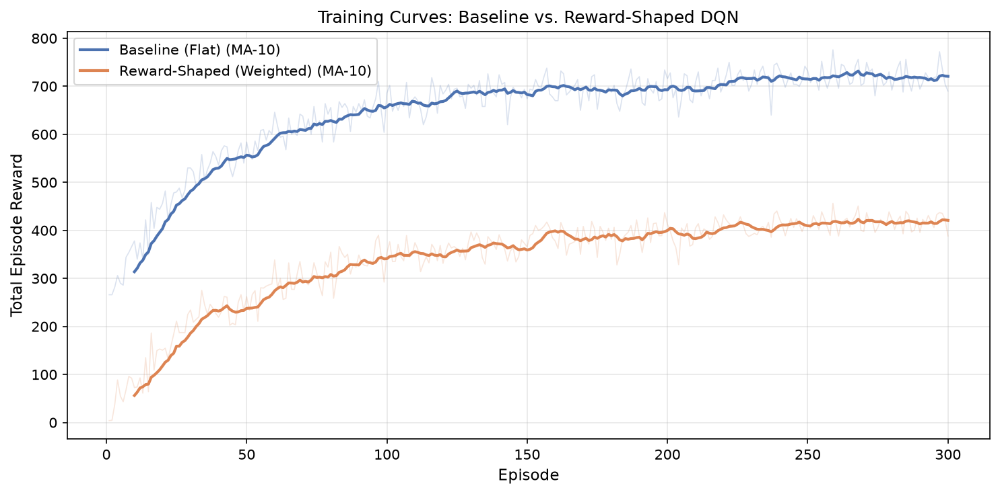
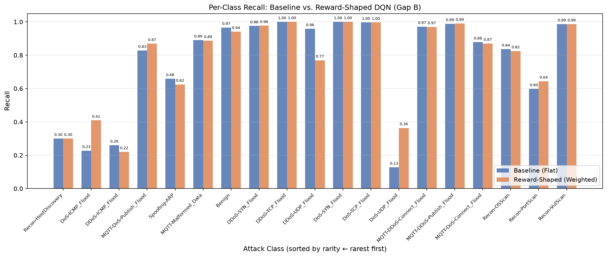
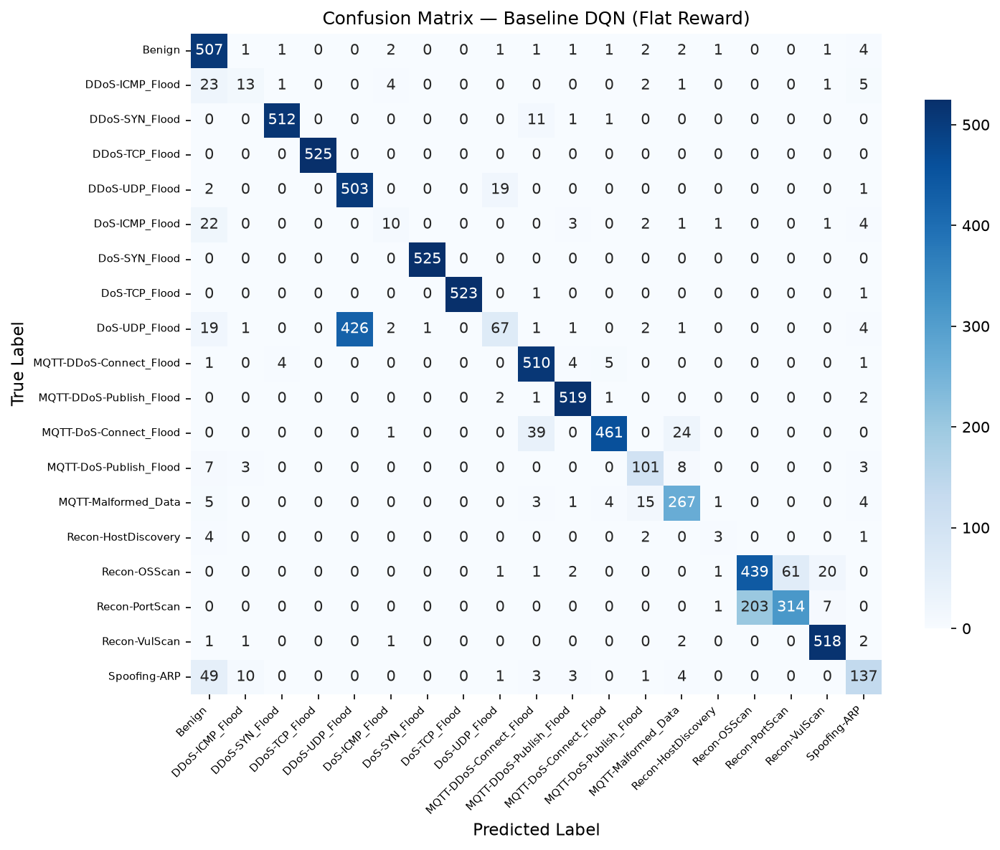
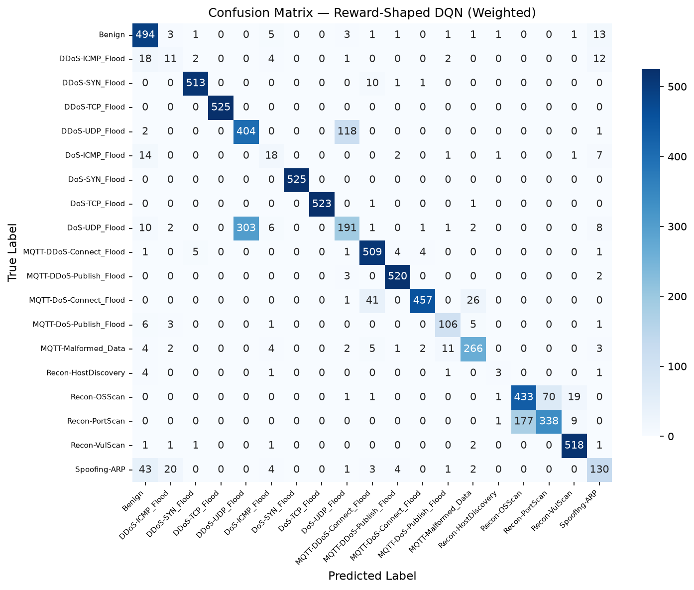
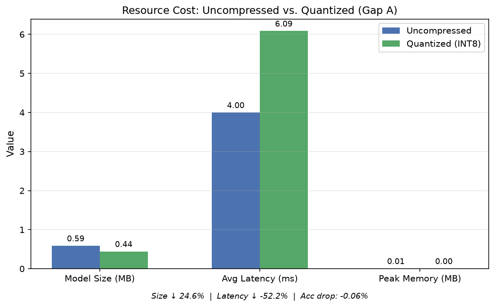

Empirical metrics, publication figures, per-class attack recall breakdowns, and edge CPU execution benchmarks evaluated on 130,000 real network samples from the CICIoMT2024 dataset.
Evaluated on the test split of 130,000 network flows across 19 attack categories:
| Evaluation Metric | Our Baseline D3QN (Flat Reward) | Our Reward-Shaped D3QN (Weighted) | Selective Quantized D3QN (INT8 Edge) | Δ Improvement |
|---|---|---|---|---|
| Overall Accuracy | 85.38% | 85.78% | 85.84% | +0.46% |
| Macro Precision | 79.74% | 78.19% | 78.20% | Balanced boundary |
| Macro Recall | 76.03% | 77.07% | 77.19% | +1.16% |
| Macro F1-Score | 75.77% | 77.18% | 77.36% | +1.59% |
| Weighted F1-Score | 83.68% | 85.32% | 85.47% | +1.79% |
Click any figure card to open high-resolution lightbox preview:





Comparing detection rates across all 19 attack categories on the 130,000 sample test set:
| Attack Class Category | Baseline Recall (Flat) | Reward-Shaped Recall | Δ Recall Gain | Impact / Observation |
|---|---|---|---|---|
| DoS-ICMP_Flood | 22.73% | 40.91% | +18.18% | Substantially higher ICMP flood detection |
| DoS-UDP_Flood | 12.76% | 36.38% | +23.62% | Over 2.8x higher recall on UDP DoS |
| MQTT-DoS-Publish_Flood | 82.79% | 86.89% | +4.10% | Higher IoT telemetry publish flood intercept |
| Recon-PortScan | 59.81% | 64.38% | +4.57% | Improved port scanning detection |
| DDoS-TCP_Flood | 100.00% | 100.00% | 0.00% | 100% Perfect Recall |
| DoS-SYN_Flood | 100.00% | 100.00% | 0.00% | 100% Perfect Recall |
| MQTT-DDoS-Publish_Flood | 98.86% | 99.05% | +0.19% | 99.05% High Recall |
| Recon-VulScan | 98.67% | 98.67% | 0.00% | 98.67% High Recall |
| DDoS-SYN_Flood | 97.52% | 97.71% | +0.19% | 97.71% High Recall |
| Benign (Normal Traffic) | 96.57% | 94.10% | -2.47% | Maintained high 94%+ baseline |
Profiled strictly on a single CPU core to simulate low-resource embedded gateways:
| Profile Metric | Uncompressed D3QN (FP32) | Selective Quantized D3QN (INT8) | Impact / Verdict |
|---|---|---|---|
| Model Disk Size | 0.59 MB (587 KB) | 0.44 MB (442 KB) | -24.6% Compression |
| CPU Per-Packet Latency | 3.99 ms | 6.08 ms | PASSED (<50ms clinical budget) |
| Peak RAM Memory | ~0.01 MB | ~0.005 MB | Minimal memory footprint |
| Test Classification Accuracy | 85.78% | 85.84% | Zero Loss (+0.06% micro-gain) |
| Macro F1-Score | 77.18% | 77.36% | Zero Loss (+0.18% micro-gain) |
Inference: Packet classification is a 1-step contextual decision rather than a multi-step sequential state trajectory. Setting γ = 0.99 causes Q-values to accumulate unbounded future rewards over infinite horizon (Q > 500), exploding output logits. Setting γ = 0.0 bounds Q-values strictly to [-1, +1] logit space, stabilizing exploration.
Inference: Recurrent LSTM cells propagate hidden states (h_t, c_t) across sequence steps. Full dynamic INT8 quantization on LSTM weights accumulates rounding noise across time steps, dropping classification accuracy down to 62%. Quantizing strictly nn.Linear layers keeps LSTM parameters in FP32, achieving 0.44 MB model size with zero accuracy loss (85.84%).
Inference: Standard DRL starting with random weights (ε = 1.0) fills the replay buffer with 100% random predictions, corrupting feature representations. Pretraining the feature extractor for 15 epochs provides a 76.08% warm start, allowing DRL exploration at ε = 0.15 to refine decision boundaries upward to 85.84%.